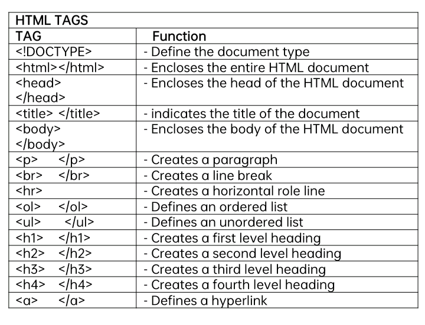
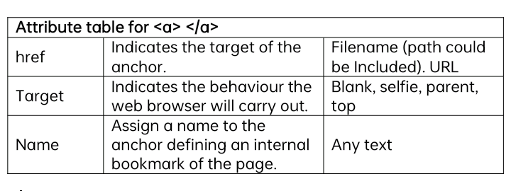
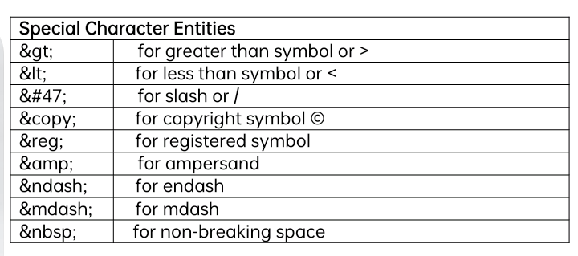
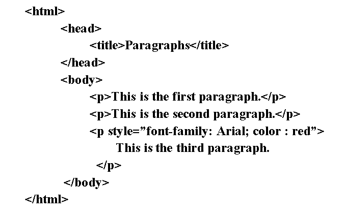
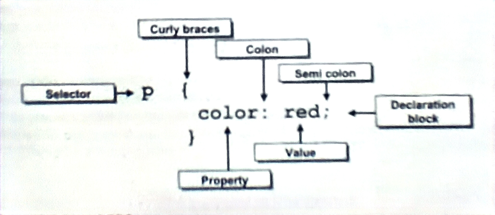

PHOTO ADJUSTMENT AND RETOUCHING
SHARPENING AN IMAGE
Sharpening in photoshop is exaggerating the edges of an image by increasing the contrast. There are many tools in Photoshopyou can use to sharpen you image:
SHARPEN TOOL
Located in the toolbar is the Sharpen tool. It increases contrast in the areas where you paint and you can choose the brush, mode, and strenght of the sharpening in the options bar. Take note to set the strenght level very low because too much sharpening with this tool can create too much noise on the image.

SHARPENING FILTERS
Click Filter in the menu bar and point to Sharpen. There are 4 different Sharpening Filters you can choose and each of them has specific sharpening functions that can be effective to sharpening your image.

1. Unsharp Mask
The widely used sharening filter that scans the image for areas where pixels whose tonal values differ by a certain quantity (the “threshold,” chosen by you) are right next to each other.
These areas tend to be edges, and the filters lets you sharpen these edges by increasing the contrast of pixels within those areas. In other words, you lighten the light pixels and darken the darkpixels, and the boundaries between them become more pronounced.

2. Smart Sharpen
Lets you control how much sharpening happens in your image’s shadows and highlights. You can choose between Basic and Advance options for sharpening your image and can even save your settings so you can apply the same settings to multiple images easily. The proccess of sharpening an image with Smart Sharpen is slightly slower than with Unsharp Mask.

Basic Sharpening
Gaussian Blur - It sharpens identically to the Unsharp Mask filter.

Lens Blur - The best choice in the group because it allows you to sharpen typical optical lens blurring. It provides finer sharpening of detal and does a better job of reducing sharpening halos than the Gaussian Blur setting.

Motion Blur - It works best when you want to remove small amounts of motion blur that resulted from camera movement. Click the wheel to the right of the Angle field to set the direction of the motion that needs to be removed.

USING LEVELS AND CURVES ADJUSTMENT
These are the two most important image editing tools in Photoshop that are very helpful in bumping up your image’s contrast and in applying advance color editing. The two are very similar in terms of creating adjustments for the shadows, highlights, and midtones but thier approach is different which is good when you want specific adjustments to your image.

LEVELS
Allows you to adjust the highlights (the far right while slider), shadows (the far left black slider), and midtones (the middle grey slider). The graph you see in the window is teh same as the histogram panel which shows you the things you need to improve on your image ( having no lines on the two sides of the graph means the colors are all in the midtones side thus the image is lacking contrast).
These boxes shows you the current black, while and midtone levels. The box on the left, with a default value of 0, shows us the current black point level. The box on the right, with a default value of 255, shows us the current white point level:
You can also choose preset levels settings here.
You can choose what channel you want to adjust.
Drag the sliders to the left and right edges below the histogram to darken the shadows and brighten the highlights. Do this while previewing the result on the image.

CURVES
You can adjust your image by dragging the diagonalline to create a point and reshaping it into a curve. Unlike the Levels command with three sliders to adjust the image, the curves line has small squares on either end, one in the bottom left coner directly above pure black in the gradient below it and one in the top right corner directly above pure white in the gradient. These squares, or points, are the Curves equivalent of the black and white sliders in the Levels dialog box. For the midtones, clicking and dragging on the middle of the line to create a point changes the midtones of the image.
You can also add points as many as you want and can preview the changes directly on the image so you need to place the curves window where you can preview your image as a whole.

Ready to take the test? (Click any of the bottons below to proceed.)
Yeah, let's go! or Nope, I want to read the notes once again.
What is HTML?
- HTML stands for Hyper Text Markup Language
- HTML is the standard markup language for creating Web pages
- HTML describes the structure of a Web page
- HTML consists of a series of elements
- HTML elements tell the browser how to display the content
- HTML element label pieces of content such as "this is a heading", "this is a paragraph", "this is a link", etc.

Background-size Property:
COVER – resizes the images to color the entire container but may stretch or cut the image.
CONTAN – resizes the image to its default size.
AUTO – the original size of the image to its default size.
INITIAL – sets the image to its default size.
INHERIT – inherit its size from the parent element.
LENGTH – stretches the image to the set width and a height.
PERCENTAGE – stretches the image to set a width and height.

Example:
<a href="www.facebook.com">Facebook</a>
<a href="www.youtube.com">YouTUBE</a>
<a href="www.google.com">Google</a>
<a href="www.mail.google.com">Email</a>
Note: Copy this code on your Notepad and save as link.html then open it on your browser and see the magic happen.

Ready to take the test? (Click any of the bottons below to proceed.)
Yeah, let's go! or Nope, I want to read the notes once again.
What is CSS ?
CSS or Cascading Style Shets allow you to control the layout of your HTML document.
It is a simple way to add to style such as front, colors or spacing. CSS is usually a text file that is separate from your HTML file.
HTML deals with structure while CSS deals with style. With CSS you will recognize some similarities with HTML attribute names and values.
But in CSS yu will use curly braces { } colons : and semi colon ; and you will use selectors and declarations.
If you want to apply the formatting from the separate CSS file to the HTML document,
you attach the style sheet to the page using a link tag. You can link all your web pages to a single CSS file.
Any changes you make to the CSS file are then reflected in all your pages making it easy to update the layout of your pages.
Capabilities of CSS
1. CSS makes your pages easily updateable. CSS makes it possibe to update the layout of the entire page quickly. You can also specify a style once and you can apply it as many times in your document.
2. Position objects on the page. CSS gives you control when placing objects on the page exactly where you want them.
3. Layer objects on the pages. CSS allows you to position objects in three dimensions.
4. Create custom tags. CSS allows you to create custom tags to achieve specialized objectives
Advantages of Using CSS
1. Save typing and development time because you have to enter CSS code only once and it can be applied to many HTML scripts.
2. Download faster because your browser will download only one file once.
3. You can also add multiple link tags in one document.
THREE KINDS OF CSS
- External Style Sheets
These are the most global of the three kinds of CSS because you can apply the same one to an unlimited number of pages.
They allow you to develop a consistent style across pages. They easily allow you to change the layout of your entire Website by simply changing the external style sheet and every page is instantly updated.
External CSS file has a .css file extension.
Ex. <link rel=”CSS” title=”Default” href=”style.css” type=”text/css”>
- Embedded Style Sheets (Internal Style Sheets)
These are used for creating a document-wide style rule. They are placed within an HTML document, between the <head> and </head>.
Ex. <style type=”text/css”></style>
They are also used when you have a page that you want to present in a diferent style from other pages. Embedded style sheets override external style sheets.
- Inline Style Sheets
These are used for isolated changes to headline, paragraph, picture or other element. Inline style sheets override external and embedded style sheets.
Ex. <p style=”background-color: gray;”></p>
These are two things that you should remember when using the CSS code.
1. The type attribute should always be <style type=”text/css”>
2. CSS code should be enclosed in HTML comments <'! -- ... --> so that in a web browser that does not undestand CSS will not see the CSS code. Today, However, all current browsers support CSS.
Inline Styles
You can define the style for a single element using the style attribute. There are various tags that have the style attribute and that said line would be its value.

As seen in the preceding example style=”font-family : Arial” made the paragraph with it be written in a different typefaceas the first and second paragraph. This type of CSS is called inline styles because it is exactly located where the content is.
In this line font-family : Arial , font-family is called property and Arial as value. Do you remember how to specify multiple typefaces in <font></font> ? You use commas to separate the values of the face attribute. Likewise, the CSS syntax regards commas similarly.
Ex. style=”font-family : Arial , Helvetica , Verdana”
You can add as many decorations you like as long as you pace semi-colon and familiarize yourself with the syntax for the values that you can pplace there.
Ex.style=”font-family : Arial , Helvetica ; color : Red; text-align : justify”
Embedded Styles
Embedded styles or internal styles are defined by the container tag <style> </style> and placed within the head part of the HTML file. It provides style to the whole HTML file.
Inline styles are put on the exact tag where the style will be implemented while embedded styles take rather approach since it is a doument-wide style. Here is an example of how an embedded style is used:

In the preceding example, the head part contains an embedded style which writes all paragraphs in the Web page in Arial typefaces and in red.
Notice too that the attributes are encased within braces. The open brace has a p (representing <p></p>, hence,called as selectors) before it,
signifying that all attributes within from the open brace (closest to it) up to the next closing brace will be affecting all paragraphs
or contents encased in <p></p> in the whole HTML file. That’s why all paragraphs in the preceding example were affected. So to speak, embedded styles are document-wide styles.
The next example, illustrates another CSS embedded style which uses h1 as the selector. The h1 selector will change the attributes of the h1 to the specified color, in which this example indicates blue color for heading h1.
Since the font is not specified it will retain the default font, in the browser, it is the New Times Roman.
Linked Styles
External style sheets or linked styles are made outside the HTML file. An external style sheets is linked via <links>. The <links> element allows you to establish document relationships.
The <links> elements tells the browser to find the specified style sheet. It can only be used within the <head></head> section of the document. The style sheet file does not contain any HTML code, it contains only style rules.
A CSS file is a style sheet that does not contain anything but the styles so in order for it to take effect, it needs to be linked. Do you remember how embedded style are written ? A CSS file is simply just like that minus all the HTML tags.
Just like HTML files, it can be written in any text editor then saved with a file extensions of .css. Remember to change the file type to All files.
With external style sheets you can modify many Web pages by just modifying one CSS file.
Creating an External CSS File
The following steps will allow you to create and text a basic style sheet. Save your file and test or view your output in the browser.
1. Open a new blank document in Notepad.
2. Type the style you want to define.
3. On the Menu Bar click File and click Save.
4. Type your file name with a extension.css and change the file type to All Files.
Linking CSS File to HTML File
1. After creating your CSS file, open your HTML file.
2. Type the following inside the HTML file:
<link ref=”stylesheet” href=”(name of the file).css” type =”text/css”/>
Ex: <link ref=”stylesheet” href=”ewebsite.css” type =”text/css”/>
3. Save your HTML file.
Ready to take the test? (Click any of the bottons below to proceed.)
Yeah, let's go! or Nope, I want to read the notes once again.
How to Install Windows Server 2016 Step by Step.
1. Place the Windows Server 2016 DVD (or the USB) installation media and boot from it.
* Notes:
1. You can download an evaluation version of Windows Server 2016 in ISO format, from here.
2. To create a USB installation media, you can use Rufus USB creator utility.
2. At the first screen, choose your Language, Time & currency format and the Keyboard or input method and click Next.

3. Then press Install now.

4. Choose the appropriate Server 2016 version,* according to your needs and click Next.
* Note:
The Windows Server 2016 (Desktop Experience) installation includes the Windows 10 GUI and the Server Manager.
The Windows Server 2016 without the Desktop Experience, is what we have known to be the Core installation and doesn't include a GUI interface and the Server manager.
Important: Unlike some previous releases of Windows Server, you cannot convert between Server Core and Server with Desktop Experience after installation. For example, if you install Server Core and later decide to user Server with Desktop Experience, you should do a fresh installation (and vice versa).
In this tutorial, we choose to install the Windows Server 2016 Standard with the Desktop Experience. I prefer this option, because many companies have server based applications and needs the full GUI to operate well.

5. Accept the License terms and click Next.

7. Provided that it is a new installation, choose Custom: Install Windows.

8. Then select the disk to install the OS and click Next. *
* At this point you can press the New button, in order to give a specific disk space in GB for the OS.

9. Let Windows setup to copy the required files and to finish the installation.

10. After a few restarts you 'll be prompted to specify a password for the (standard) Administrator account. Type a complicated password (composed of uppercase, lowercase, symbol and numbers) and click Next.

11. When prompted, press Ctrl + Alt + Delete, type the Administrator password and press Enter to login to your new server.

12. After login, Server Manager will start automatically. Proceed to configure your new server.

Done! You successfully installed Windows Server 2016.
How to install Windows 10 Step by Step.
*Install Windows Server 2008 R2 in the BIOS Setup.
*How?
Steps:
*Turn on the computer and continuously click the Delete Key until the BIOS Setup Appear.
*In the BIOS Setup, click a systemental and set your bootable disk as primary boot option.
(Assuming that you already inserted USB until Windows Server installed.)
**If you could not find your USB in the boot options, you may click the save and exit tab and you shall see your USB flash Drive with its name. Click on it to continue to the installation wizard.**
*After that go to save and exit and exit then press save and Exit Setup. Then press any key to enter Installation wizard.
*In the installation wizard fill up with your desired configurations and select partition Y as installation disk.
*You can speed up the installation by pressing shift + F10, type taskmgr, go to processes set of the two (2) setups priority to high, then go to view tab then top on update speed and click High.
Configure Server – Client Configuration
COC1: Server Side
Disk Partitioning:
*After the server boots up, press the windows key then click on the Administrative tools, then computer managements, then click on the Disk Management then click and right click the partitioned drive then select shrink volume.
*You will see an unlocated volume, multiply it by New Simple Volume. This will launch NSU wizard.
*Assign a disk better of your choice, close any letter that is not in use.
*Set NTFS as the file system.
*Set a name of your choice in the volume label
*Click on finish.
- Installing Roles and Enable Remote Desktop –
*Press the windows key and click Administrative tools, click on server manager.
*Click on the roles then right click, select add roles.
*Install ADDS (Active Directory Domain Services), DHCP Server, DNS Server, Remote Desktop, File Services, Printer Services.
*Configure the DHCP, enter the Scope Name, Filter the starting IP and End IP, enter Subnet mask, and default gateway.
*Install additional roles if printed in the installation process service you install together the ADDS, DHCP, DNS, RD, File Service and Printer Service.
*Reboot after complete installation.
*After reboot open CMD type depromt to open wizard.
*Click on advanced mode instructions, click next
*Select Create a New Domain in a new forest then Next
*Enter the choosen domain name during the preparation steps then next.
*On the set forest Functional lruel pegf, select windows Server 2008 R2 in the Forest function level, then next.
*Wait for the installation progress to finish examination
*On the Additional Domain Controller Option page, ensure that the DNS Server check ax is selected, and click Next.
*In the Dialog box click Next.
*On the location for database, log files, system page accept default value click next.
*Enter your desired password, click next
*On the summary page, review your selections and click next. The installation will now begin.
*If you want it to reboot after installation, click on Reboot on completing box.
*If you did not checked the auto reboot box click finish and manually restart your server pc.
*Click on Remote tab, Click on Anow connections from computers running way version of RD (less secure)
*Click Apply
*Click on select users to allow your users to log in and don’t forget to add the admin as well.
*Click Apply and Ok.
-Log in Locally + Add user in Group
*Open Start Menu by processing window key
*Click Administrator tools,
*Click on Server Manager
*Go to Roles, tap (+) icon, then tap Active Directory Domain Services, Click on Active Directory Users, Click on your domain, right click on it and select New, select Organizational Unit.
*Set a name for it
*Click on the user option above the created ou and right click on it to add users. Add your members, fill in their information and set password.
*Go to the created uo and right click to add your members.
*Exit the Server Manager.
*Open start Menu, Click administrative tools,
*Go to the Group Policy Management, click on the Domain
*In computer configuration, tap (+) icon, Select windows settings, click security, right click open properties, Allow log on locally configure, add your users and admin, do the some with Remote Desktop connection.
*Do the some with APO on the created OU.
*Type gpupdate / from on CMD.
CONFIGURE FSU:
*Type services.msc in the Run command
*Click Background – Right Click open
*Set automatic on these services:
- Function Discovery Resources
- SNMP UAP
- UPNP Device Host
- SSOP Discovery
- Application Identity
- Folder Redirection –
*Create a folder in server Desktop PC
*Rename to Folder Redirection – Right Click on the Desktop – Folder Redirection
*Open Properties
*Click Sharing tab, Check Permission, Set Everyone to full control, read and write
*Add the user PC names
*Add the administrator
*Click Apply and Ok
*Copy the network path
*Go to the start button, then administrative tools
*Click Group Policy Management
*Click the host: ICTserver.com
*Click Domain Controller
*Click AI folder – Right click to create GPO
*Right Click folder – Create GPO
*Click New Object Name – Folder Redirect
*After your right click, edit Computer Configuration,
*Go to user configuration, Click (+) icon, click on policies, windows settings -Folder Redirection – Target Tab – Security - uncheck – grant.
*Check on Basic Redirect
*Paste the Root Path you copied while sharing the folder.
*Go to RUN – type gpupdate/force in CMD
*Click the user folder redirection – Right Click Desktop – Properties
*Click Security tab – uncheck Grant
*Click Continue – Select Administrator – ictserver.com
*Check Replace Over – Select Administrator – ictserver.com
*Click change permission – Add permission to Amie or admin
Allow remote desktop – create new folder – properties – full control
*Go to security – full control
*Share with everyone.
*Run server IP – it will display shaved folder – ICT redirection.
*Open redirect folder
*Server – Desktop folder properties – everyone – full control
*192.168.2.34 (client IP)
- Backup Folder:
*Open Start – Back up and Restore
*Username – Password – Click Next
*What do you want to back up? Local IP Back once if no back up
*Back up folder – click back up Now
*Add Remote Desktop
*Computer – right – click – properties
*Remote setting Allow – Ok
*Proceed to remote desktop connection
Client Side
*Boot USB Flash Drive in BIOS Set Up
*Boot USB Flash Drive in BIOS Set Up
*Setting Remote Desktop
*Ok – Accept
*Dynamic IP
*Static IP
*Ping in Client PC
*Firewall off
*Network and Sharing
*Go to Computers, Right Click Properties
*Change Setting – Type server Domain
(If prompted with ADDS Problem)
*Go to Network, LAN
*Change Adapter setting
*Click IP V4 – use the following DNS Server
*Preffered DNS – Server IP
*Go back to change setting in computer
*Type Domain Name
*Domain Changes
*Close
*Go back to change computer setting to check if the computer is the same with the Server PC.
*Type ping server IP - + or type ping client IP - +
*Reply
*Reply Loses (0%)
Reference
Ready to take the test? (Click any of the bottons below to proceed.)
Yeah, let's go! or Nope, I want to read the notes once again.

 • Click the Defragment Now button.
• Click the Defragment Now button.